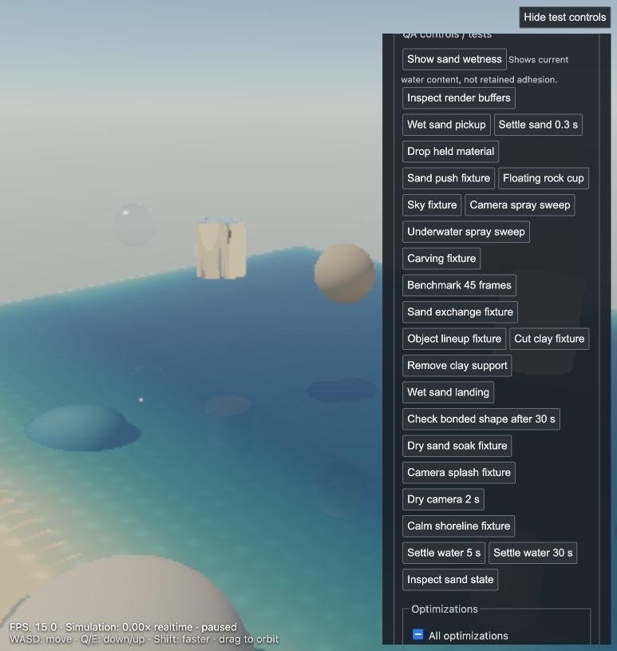
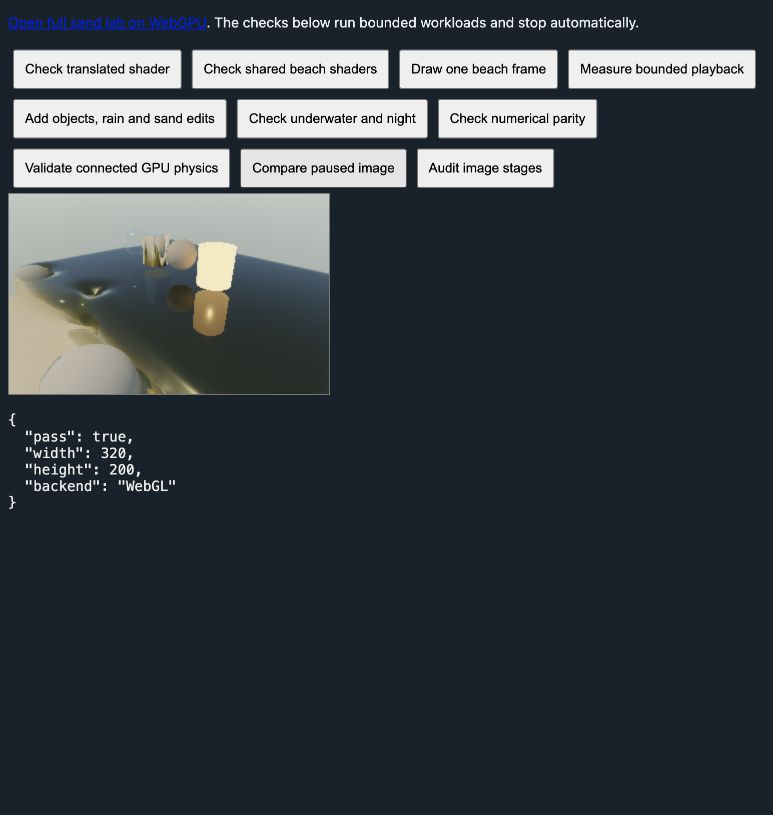

2026-11-08 · Mac, AMD GCN-4 · Codex in-app browser. WebGL remains the default.
The full live beach now has a native WebGPU rendering route using the same scene and GLSL material definitions, translated to WGSL. This restores the existing controls, editable sand, objects, water/glass optics, Gaussian/SH particles, rain, condensation, persistent foam, sky, exposure, player and field diagnostics without maintaining a second feature implementation. Historical snapshots are unchanged.
This fidelity-first port is slower on this machine. It is not the optimized resident-water prototype promoted to full feature parity. It retains the live renderer’s many tracing/lighting passes and the full simulation’s CPU dependencies. No speedup or fully GPU-resident physics claim is supported by these measurements.
Open full sand lab on WebGPU, paused · Bounded comparison and numerical checks · Earlier, reduced resident-water prototype
320 × 200 fixed rendering size, resolution 1 (1,164 initial water markers), wind 24 m/s, medium lighting 16 × 12 × 16. Each run warms 16 frames and measures 36 frames. Both use the same CPU/WebAssembly physics to isolate rendering-backend cost; each frame includes actual simulation, rendering and GPU completion. At most two earned 1/30 s steps per frame. Each backend ran alone. Subsequent workloads add features to that backend’s running fixture. Wall-time-dependent steps mean evolving states are comparable, not pixel-identical. Frozen-state comparisons below separately validate appearance. Short runs on one machine are not a universal benchmark.
| Workload | WebGL FPS | WebGPU FPS | WebGL realtime | WebGPU realtime | Raw data |
|---|---|---|---|---|---|
| Beach + three boulders | 11.45 | 8.39 | 0.721× | 0.559× | WebGL / WebGPU |
| + glass, mirror cup, rock, lamp cup, rain, carve | 7.74 | 5.79 | 0.516× | 0.386× | WebGL / WebGPU |
| Same workload, underwater night | 7.34 | 5.89 | 0.489× | 0.393× | WebGL / WebGPU |
Average WebGPU rendering/completion cost was 83–128 ms, versus 44–79 ms for WebGL. In warmed samples native command encoding took roughly 2 ms; most of the difference was GPU execution/wait, not JavaScript uniform packing. Reusing the old pass graph faithfully does not automatically make it faster on WebGPU.
The normal interactive page also completed bounded runs at resolution 2.2 (~13,293 markers), with the existing hardware drawing policy. These are functional/stability checks, not matched backend comparisons. They include first-use effects and differing view/state.

The corrected production build also completed 45 normal-page frames with connected GPU physics: 20.57 s wall time, 2.87 s simulated, including cold first-play pipelines. Median frame 316 ms, p95 367 ms, rendering allocation 102 MiB, no device loss. This is a cold functional run, not the warmed comparison above. Field slice controls were checked after playback.
Frozen 320 × 200 linear HDR output: base beach mean absolute RGB difference 2.47×10⁻⁷; loaded beach with glass, mirror cup, rock, lamp, tannins and a carve 3.26×10⁻⁷ (99th percentile 1.28×10⁻⁶; maximum 0.00414 at a few pixels). Underwater night mean difference 2.58×10⁻¹⁰. These are pixel comparisons, not a claim every combination of settings was tested.

The initial carved-image comparison was invalid: the fixture edited a never-uploaded WebGL DataTexture, whose partial upload left untouched rows uninitialized. The corrected fixture first renders the normal loaded beach, then edits it. Direct texture readback identified that cause; the WebGPU terrain was complete.
All drawing is native WebGPU. Connected water deposition, projection/pressure, neighbor work, surface corrections and contacts share that same device. Fine-particle, rain/foam and lighting texture passes are also native. CPU still owns sand, bonds, rigid bodies, player, rain mass, droplets, scalar preparation/transport and portions of field setup. Final connected state is read back (~1.36 MB at the full setting); there is no cross-WebGL context, but this is not zero-readback simulation.
One frame in flight, sequential compilation, translation/pipeline/completion timeouts, a 512 MiB rendering allocation ceiling, bounded compute buffers, pre-use numerical validation, explicit CPU physics fallback, and disposal on page exit are in place. Replaced geometry releases its GPU buffers. One cold production pipeline exceeded the original 10-second compile budget and stopped cleanly without device loss. Resource keys now exclude undeclared shared texture bindings, and asynchronous pipeline compilation has a separate 30-second limit; submitted GPU frames retain the 2-second limit. Completed playback tests had no unexpected context/device loss. These controls reduce risk; they cannot guarantee a browser or driver never fails.
Next: connect resident simulation buffers directly to reconstruction; move mutable terrain/contact and rigid-body feedback together so readback can be removed; profile/fuse repeated full-screen optics while retaining the frozen-image gates. Retain the fast reduced prototype as an oracle, not a replacement that silently drops features. Measure again on RTX hardware when evidence is available.